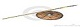
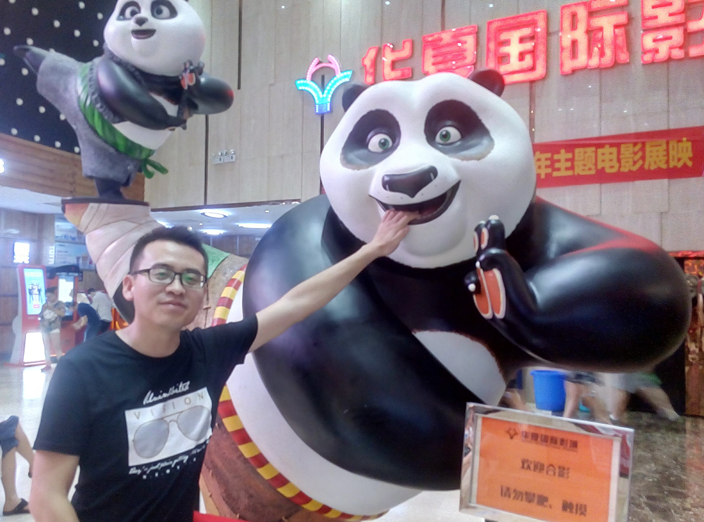
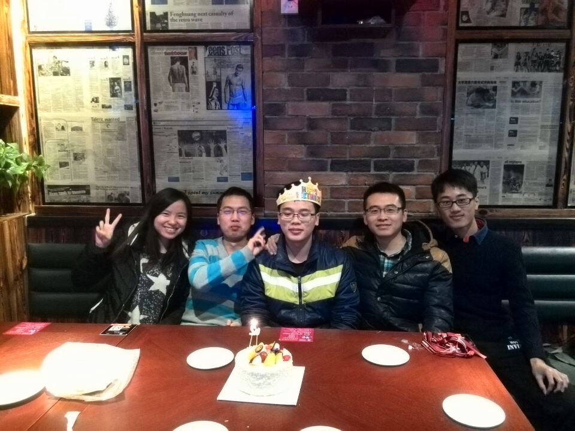
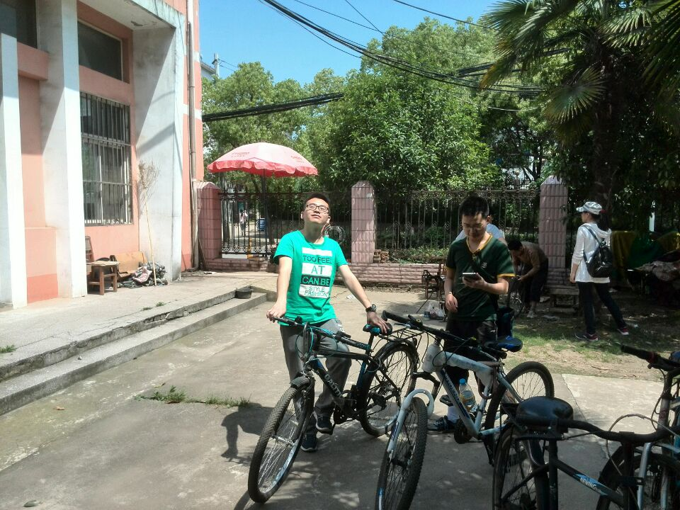
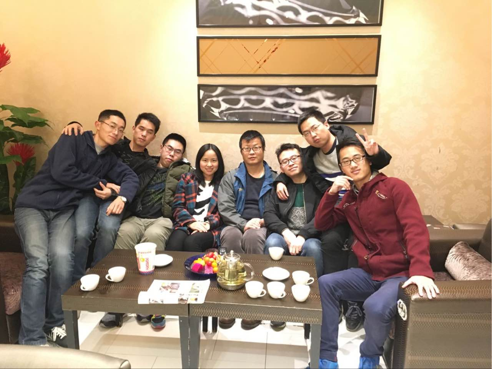
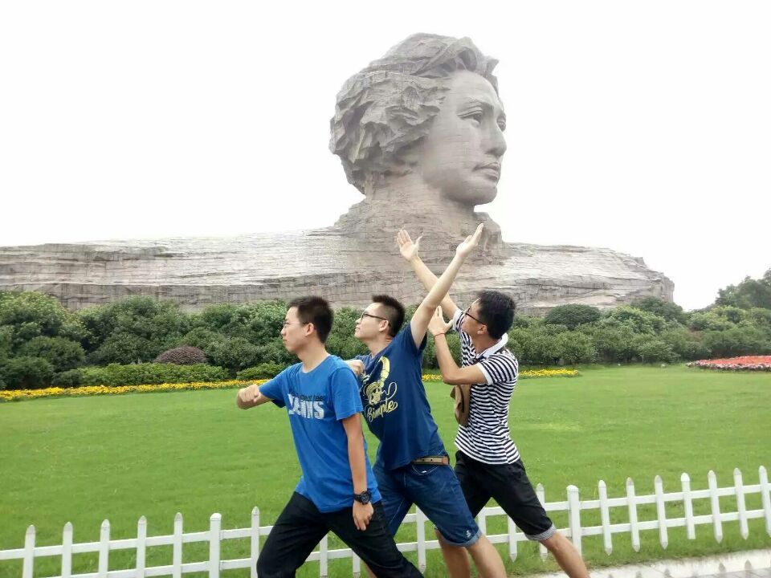
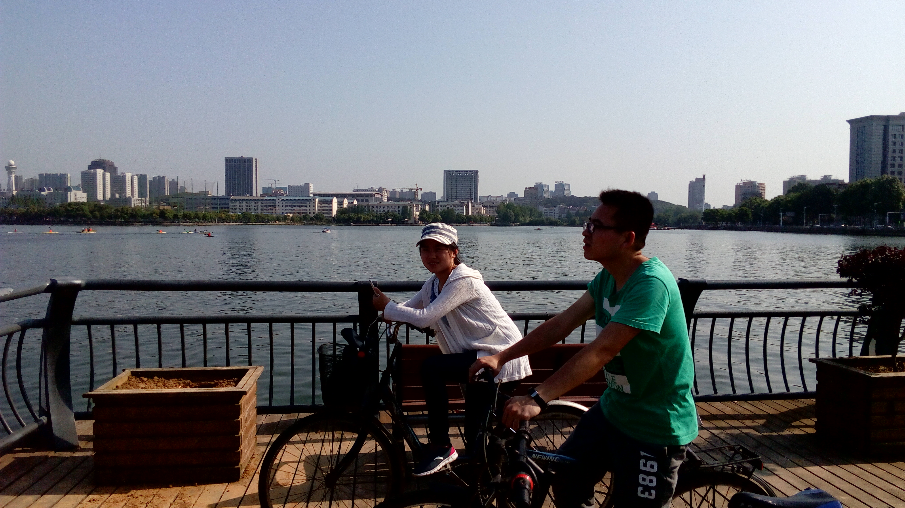
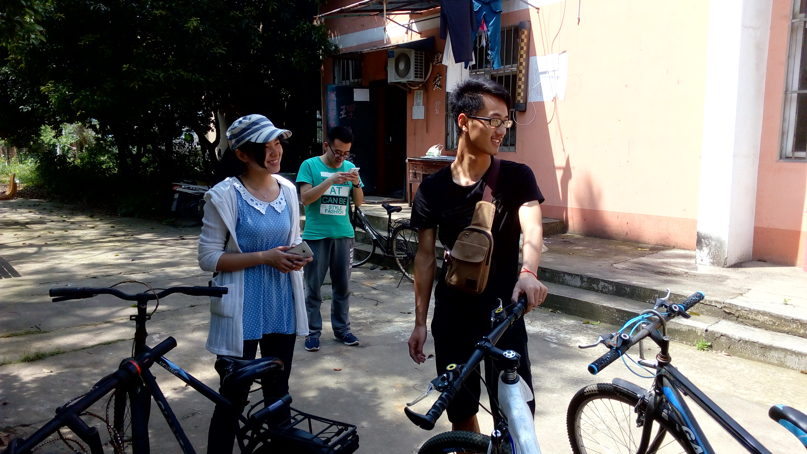
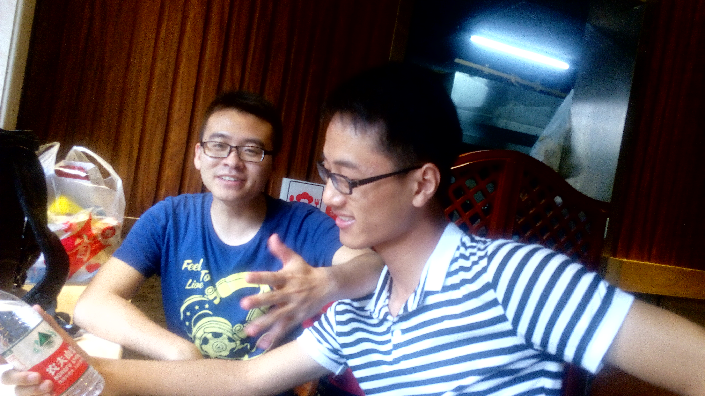

Weclome to 409
网 站 首 页
中 国 知 网
华 科 官 网
华 科 图 书 馆
HUB 系 统
测试中心
华科测试中心
武汉理工测试中心
登 陆 中 心
用户登录
管理员登陆
联系我们

实 验 室 介 绍
实验室负责人为王老师，主要研究方向为传感材料与光电检测技术，一直从事氧化物探测材料以及微光机电（MOEMS）传感器件与光电检测技术方面的研究。在薄膜器件、阵列器件以及光电检测技术等方面做了较多的研究。在华中科技大学任教期间，作为主要研究者参加了“非制冷探测器VOx材料的研制”、“非制冷VOx红外焦平面制备工艺研究”、“新型大容量微波开关制备”、“基于图形衬底的高效白光LED外延芯片产业化制备技术研究”等多项国家863项目与国家自然科学基金项目。目前在研的课题以及研究兴趣主要是光学传感-（热光、磁光理论）与探测材料与器件的研究。 在基础研究课题之外，也承担过多项光电检测技术方面的产学研合作课题，如：“基于红外流量传感技术的人员计数系统”、“基于面积热传输模型的漏钢预报系统”、“低成本温、湿度检测系统”、“红外在线测油仪”等。
实验室消息发布
更多>>
KT2811使用说明
2017-07-14
XMT-8000智能型温度控制仪
2017-07-14
实验室药品大全
2017-07-14
实验室仪器大全
2017-07-14
实验室活动安排
2017-07-14
实验室学生学习计划
2017-07-14
联系人： 王老师
联系地址
湖北省武汉市洪山区珞喻路 1037号南五楼
联系方式：
13927290805
我们的故事
【Enter】







